×
Proposta de plataforma proprietária
de música para a TIM
com Zuca + Cultura Artística
São Paulo · 2027
Plataforma · Conteúdo · Experiências · Pop-up · Benefícios para clientes TIM · Escala
61,9 mi
linhas móveis TIM que passam a ter
uma casa da música brasileira
112
anos de Cultura
Artística
26
shows por ano em
dois palcos
2.000+
inscrições no
Edital Zuca 2025
5–6 mil
assinantes e
patronos
912 mil
seguidores do
Jota.pê
A TIM não patrocina um evento: ganha uma plataforma própria de música. A Zuca descobre e produz, o Cultura Artística dá o palco, e a TIM leva tudo para o bolso de 61,9 milhões de clientes, com conteúdo, ingressos e benefícios.
Casa
Zuca +
Cultura
onde acontece
App
TIM
MUSIC
onde se assiste
Clube
Cliente
TIM
quem entra primeiro
Base TIM: 61,87 mi de linhas móveis no 2T26 (resultado trimestral). Série: 13 shows no Auditório (150 lugares) + 13 no Teatro Principal (771). Seguidores consultados em set/2026.
A ideia
Uma plataforma de música que a TIM é dona
Marcas de telecom disputam atenção com patrocínio pontual. A TIM MUSIC faz o contrário: cria um lugar fixo, uma agenda que não para e um motivo para o cliente abrir o app toda semana.
01 · Descobrir
Edital TIM MUSIC
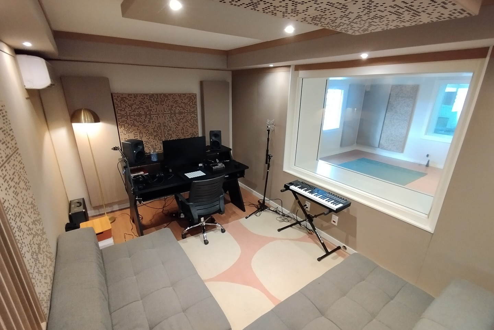
Novos nomes chegam pelo edital da Zuca, com mentoria, estúdio e lançamento. A TIM assina quem vem aí.
02 · Assistir
Conteúdo no app
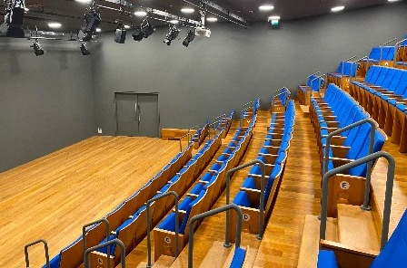
Jams, Papo de Música, podcast e shows gravados. Tudo estreia primeiro no TIM MUSIC.
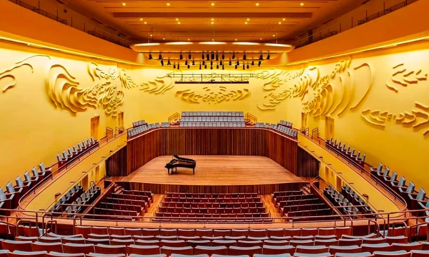
Série Brasilidades no Teatro, pop-up na rua e noites que viram conteúdo de novo.
04 · Pertencer
Clube do cliente TIM
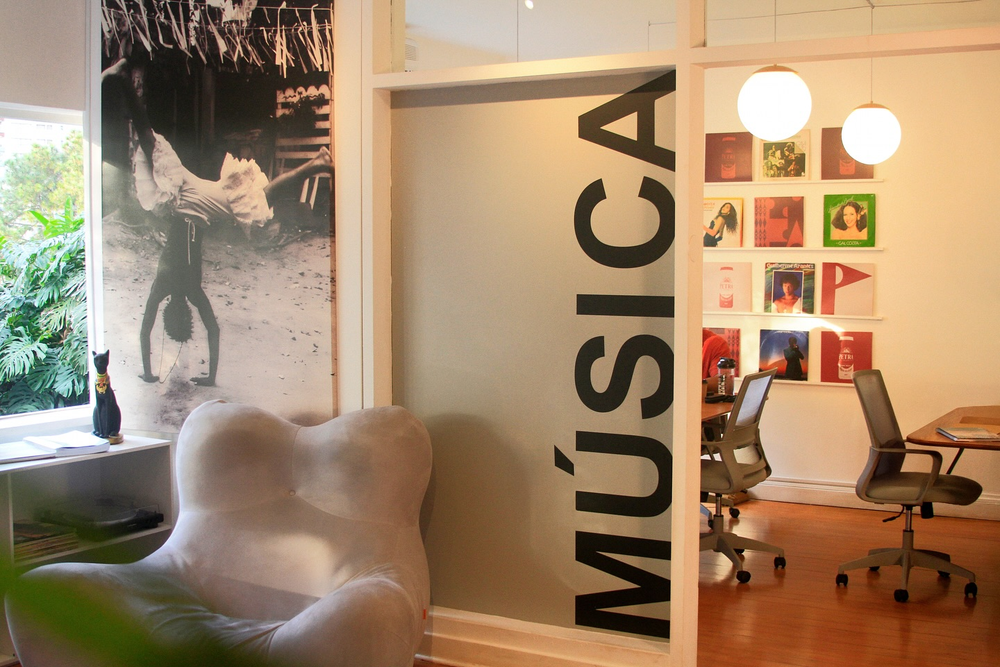
Pré-venda, desconto, passagem de som, meet & greet. Ser TIM passa a abrir portas.
CicloQuem descobre um artista no app compra o ingresso com benefício, vive a noite, e a noite volta como conteúdo. Cada show alimenta o próximo clique.
Quem está por trás
Idealizadora da proposta
Talita Morais
Empresária, gestora de carreiras musicais e fundadora da TMusic e da Casa da Música Brasileira, a Zuca.
Especialista em estratégia, posicionamento e desenvolvimento artístico. Seu trabalho é marcado pelo olhar estratégico e pelo apoio genuíno aos artistas, sempre buscando fortalecer a cultura nacional.
Hoje é empresária de
Jota.pê, Fran, Rachel Reis, Juma e Majis
Novos negócios e estratégia
para Vanessa da Mata
Quem está por trás
A TMusic
Uma plataforma para a música brasileira. Um lugar onde arte, estratégia e negócio se encontram para desenvolver carreiras, criar projetos e construir novas possibilidades para a música.
Atua em três frentes que se conectam: carreiras artísticas, produção executiva e audiovisual, e a Zuca, seu espaço cultural.
Cases com marcas
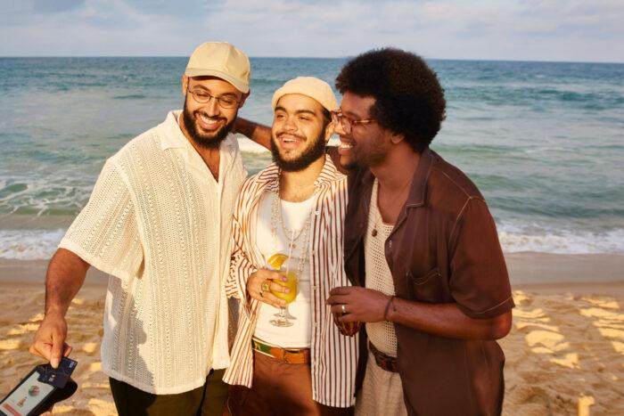
Gilsons regravam “Deixa Acontecer” para o cartão GOL Smiles
Campanha “Chega de Saudade” para a Hering
01
Gestão de carreira 360°
Desenvolve e estrutura carreiras com foco em autenticidade, posicionamento e crescimento sustentável.
02
Branding experience
Transforma identidade artística em experiência de marca, com conexão genuína com o público.
03
Marketing e estratégia
Presença digital, conteúdo, campanhas e lançamentos que transformam audiência em comunidade.
04
Projetos especiais
Conecta música, marcas, audiovisual, festivais e instituições, da ideia à execução.
05
Selo musical
Selo TMusic, em parceria com a Sound ON: lançamentos, distribuição e estratégia de catálogo.
06
PR e assessoria de imprensa
Para artistas e para marcas: histórias, pautas e relacionamento com veículos.
São Paulo, Brasil. Fonte: apresentação TMusic 2026.
Ecossistema
Os artistas do nosso ecossistema
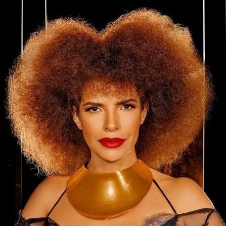
Vanessa da Mata
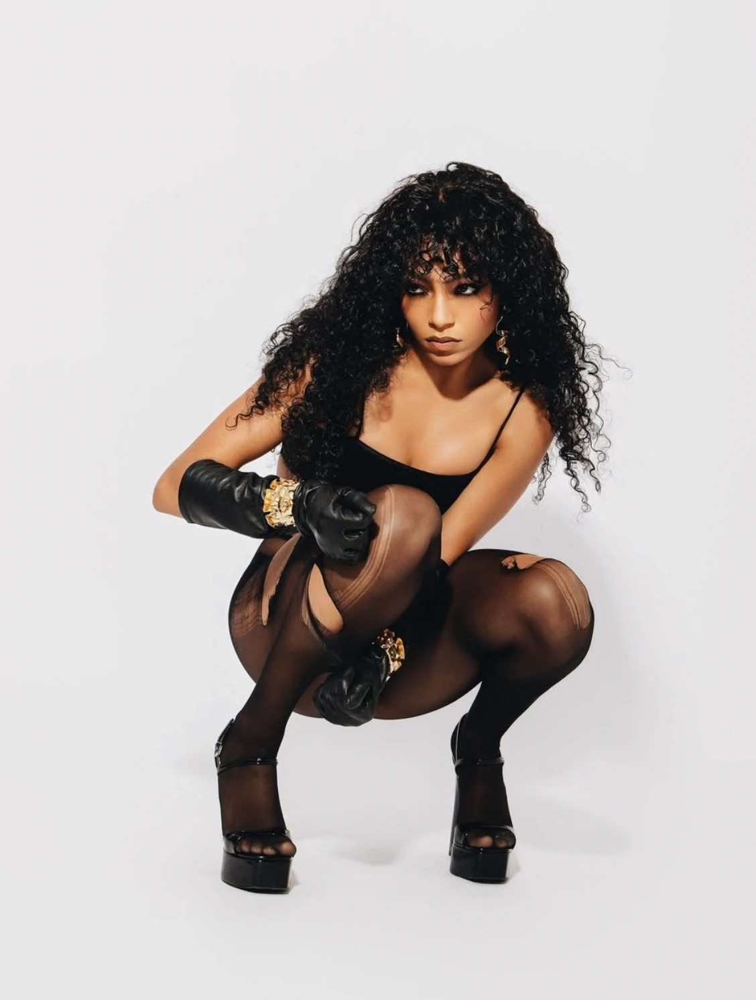
Any Gabrielly
Quem está por trás
A Casa da Música Brasileira
Idealizada por Talita Morais, a Zuca é um espaço cultural instalado em uma das primeiras casas modernistas do Brasil, projeto de Gregori Warchavchik de 1930, tombada pelo IPHAN, no Pacaembu, em São Paulo.
Reúne estúdio de música, estúdio de dança, estúdio fotográfico, escritório colaborativo e jardim com palco para mais de 500 pessoas. É onde artistas, marcas e comunidades se encontram para criar, se desenvolver e transformar o cenário musical brasileiro.
Edital de novos talentosEdital AmplifikaJam · Jota.pê convidaProsa ZucaPodcast Música ContadaComunidade Zuca
500+
pessoas no jardim com palco
2.000+
inscrições no Edital 2025
Destaque em Rolling Stone, Billboard, Meio & Mensagem, Quem e Hypebeast, entre outros.
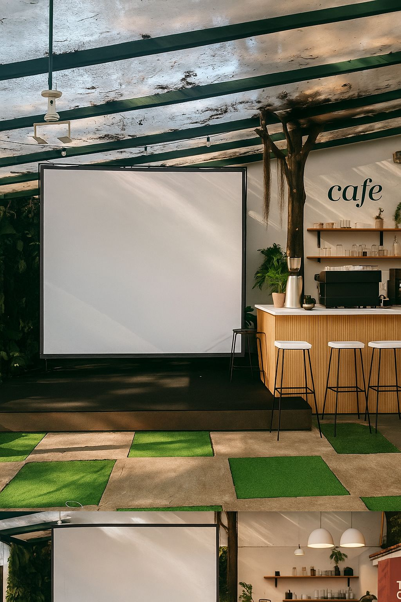
Café e terraço
Quem está por trás
Cultura Artística
Desde 1912 · um patrimônio nacional
O teatro foi inaugurado na temporada de 1950 com um concerto preparado por Heitor Villa-Lobos e Camargo Guarnieri. Projeto de Rino Levi, com painel de Di Cavalcanti na fachada, era um dos maiores e mais modernos complexos culturais da América Latina.
Tombado nas esferas federal, estadual e municipal, reabriu em 2024 com padrão internacional de som e luz, no centro de São Paulo, perto da Praça Roosevelt e do Copan.
771
lugares no Teatro Principal
5–6 mil
assinantes e patronos
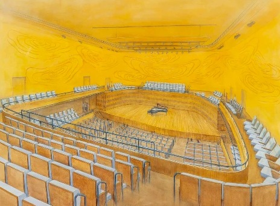
Teatro Principal
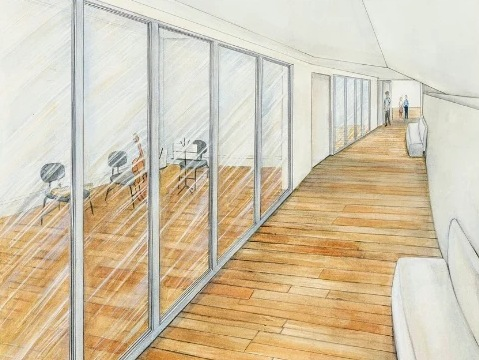
Salas de estudo
Quem constrói
O celeiro, o palco e o alcance
Celeiro · desde out/2024
Zuca, a Casa da Música Brasileira
Idealizada por Talita Morais numa casa modernista de Warchavchik (1930), no Pacaembu, com Jota.pê como embaixador. Edital de novos talentos, podcast, Prosa e Jam. Lança e gerencia a nova geração da música brasileira.
Palco · desde 1912
Cultura Artística
Teatro de Rino Levi, com painel de Di Cavalcanti, tombado nas três esferas. Reaberto em 2024 com padrão internacional de som e luz: Teatro Principal de 771 lugares e Auditório de 150.
Alcance · 61,9 mi de linhas
TIM
Leva a casa e o palco para o app, a base de clientes e a mídia. Transforma um endereço no centro de São Paulo numa plataforma nacional, com dados e relacionamento próprios.
Juntos, Zuca e Cultura ocupam cultural e socialmente o centro histórico, da Roosevelt ao Copan.
A plataforma
Abra o app. A casa está lá.
O TIM MUSIC vive dentro do ecossistema TIM (app Meu TIM ou app próprio) e reúne em um lugar a agenda, os ingressos com benefício e os conteúdos exclusivos da Zuca e do Cultura.
Agendashows, jams e pop-ups da semana
Ingressospré-venda e preço de cliente TIM
Assistirsessões, entrevistas e shows gravados
Clubebenefícios por plano e experiências
Dadosa TIM conhece o fã e fala com ele
21:045G ▮▮▮
Music
Oi, Ana · cliente TIM Black
Série Brasilidades · qui 21h
Teatro Cultura Artística
Pré-venda TIM · abre em 02:14:33
Agora no app
InícioAgendaAssistirClube
21:045G ▮▮▮
SEU INGRESSO
Série
Brasilidades #07
Qui, 21h · Teatro Principal
Plateia TIM · Fila F · 12
BENEFÍCIO TIM
Upgrade de setor + acesso à passagem de som às 18h
21:045G ▮▮▮
PAPO DE MÚSICA · EP. 07
Ao vivo no Cultura, com Fabiane Pereira
Estreia exclusiva TIM MUSIC · 48 min
Cortes
▶ "A música que mudou tudo" · 1:12
▶ Bastidor da Jam · 0:48
▶ Canja no Auditório · 2:05
Mockup ilustrativo. Nome, layout e integração ao app Meu TIM a definir com a TIM.
Conteúdo
Uma grade que nunca para
Os formatos já existem e já têm público na Zuca. Com a TIM, ganham nome, estreia no app e escala de distribuição.
26 shows · transmissões e fonogramas
Série ao vivo no TIM MUSIC
Os shows do Auditório e do Teatro Principal viram transmissão e faixas gravadas ao vivo, com estreia no app.
13 entrevistas ao vivo · YouTube
Papo de Música
Com Fabiane Pereira, pré-show ou exclusivas para assinantes
Documentário anual
Edital TIM MUSIC
Da inscrição ao primeiro palco grande
Zuca Jam
TIM MUSIC Sessions
Intérpretes e compositores criando juntos
Impresso
Anuário da Cultura Brasileira
As entrevistas do Papo de Música viram revista anual de colecionador: música, cinema, literatura, moda e artes plásticas.
Também em formato digital: Prosa e Zuca Podcast. Tudo com assinatura TIM MUSIC, estreia no app e distribuição nos canais da Zuca e do Cultura.
Experiência · Palco
Série Brasilidades apresentada por TIM MUSIC
13 shows com curadoria da Zuca no Auditório, intimista e ideal para gravação, e 13 shows no Teatro Principal, com curadoria junto ao Cultura Artística. Cada noite é um evento com ingresso, uma estreia no app e conteúdo nas redes.
921
lugares em dois palcos
Teatro Principal · 771 lugares · 13 shows
Auditório · 150 lugares · 13 shows
Como o cliente vive
Recebe o aviso no app, compra na pré-venda com preço TIM, entra pela fila de cliente, assiste da Plateia TIM e revê o show no dia seguinte, no app.
Abertura TIM MUSIC
"TIM MUSIC apresenta" no palco.
Gravação para o app
Transmissão e faixas ao vivo.
Plateia TIM
Fileiras reservadas para clientes.
Lounge TIM
No foyer, com resgate de benefícios.
Fotos: Teatro Principal e Auditório do Cultura Artística.
Possibilidades de line-up
Quem pode subir ao palco TIM MUSIC
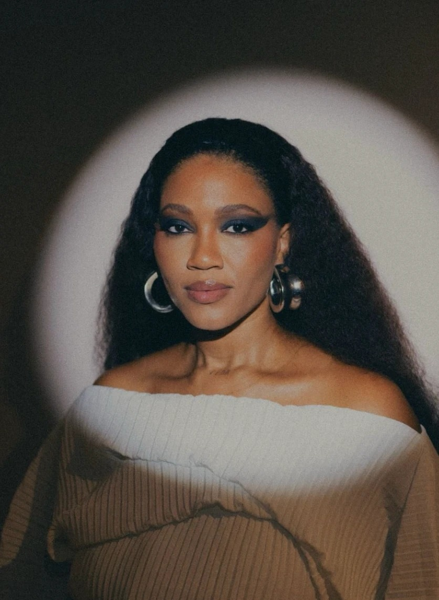
Luedji Luna
MPB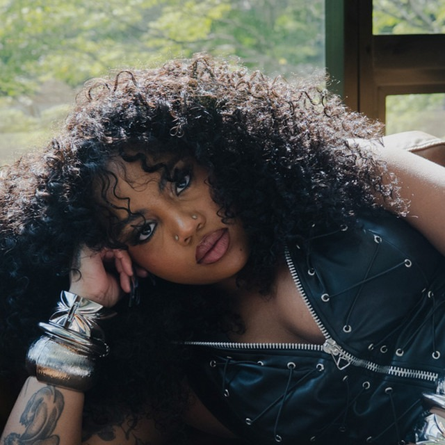
Duquesa
Rap e trapExemplos de possibilidadesA curadoria será construída a quatro mãos entre a TIM e o nosso time, de acordo com o conceito e os objetivos da plataforma.
Fotos de Emicida e Péricles via Wikimedia Commons: Festival Sensacional (CC BY-SA 2.0) e Multishow (CC BY 3.0).
Diversidade
Todos os sons da música brasileira
A plataforma não fica em um estilo só. A programação pode passear por universos diferentes e falar com públicos diferentes da base TIM.
Rap
Emicida, Rashid, Duquesa
MPB
Luedji Luna, Jota.pê, Vanessa da Mata
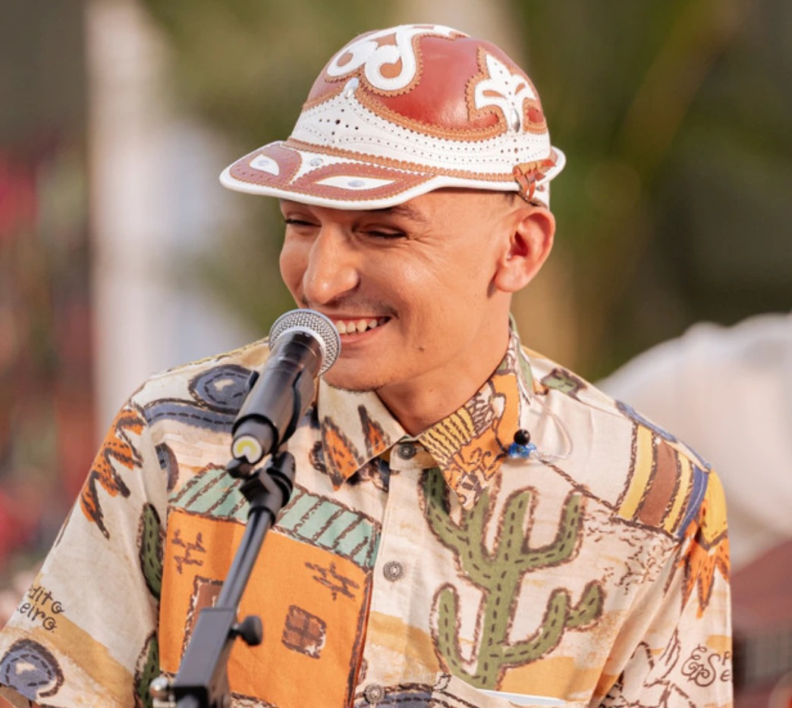
Forró e piseiro
João Gomes
Soul e black music
Simoninha
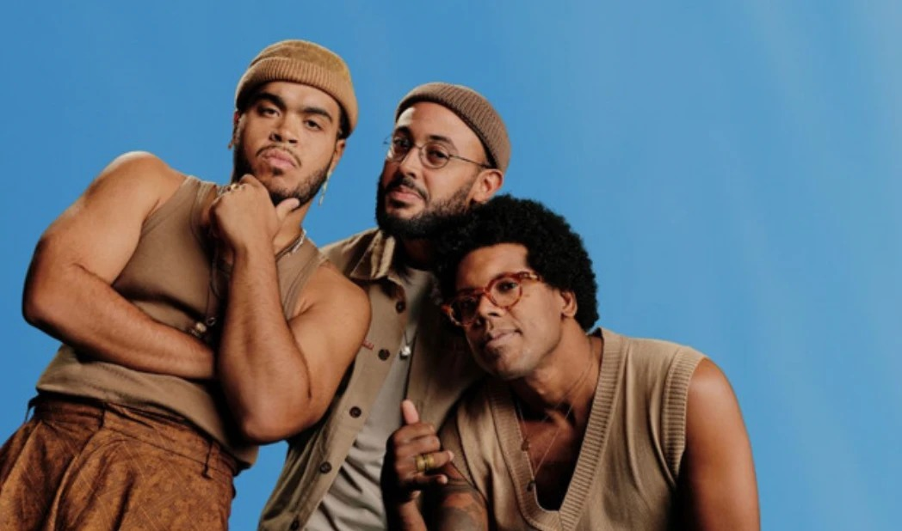
Nova MPB e pop
Gilsons, Fran, Rachel Reis, Juma
Nomes ilustrativos. A seleção final acontece na curadoria conjunta TIM + Zuca + Cultura Artística. Fotos de Emicida e Péricles via Wikimedia Commons (CC BY-SA 2.0 / CC BY 3.0).
Experiência · Pop-up
O pop-up TIM MUSIC na rua
O foyer do Cultura se abre para o trânsito de pedestres do centro. É ali dentro que a TIM MUSIC ganha endereço físico: um espaço onde qualquer pessoa entra, escuta, grava e sai cliente, fã ou os dois.
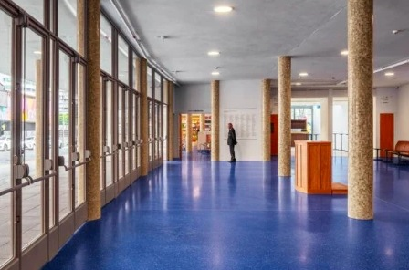
O foyer hoje
Estúdio aberto
Qualquer pessoa grava o seu take.
Cabines de escuta 5G
Lançamentos e sessões da casa.
Palco pocket
Apresentações curtas no foyer.
Balcão TIM
Benefícios, chip e recarga.
Fixo
Aberto no horário comercial e nas noites de show, com agenda, resgate de benefícios e venda de chip e planos.
Cultura para a Rua · 2 domingos por ano
Rua fechada entre a Roosevelt e o Copan, grátis, com show de encontro e 2 DJs. A TIM assina o evento, com exclusividade de segmento.
Itinerante
O módulo viaja com o Edital para as praças onde a Zuca busca talentos.
Uma noite
Da pré-venda ao dia seguinte
Cada show da Série Brasilidades gera pelo menos sete momentos de contato com o cliente. A marca não aparece uma vez; ela conduz a noite inteira.
D-7 · 10h
Push no app: “pré-venda TIM abre amanhã”.
D-6 · 10h
Pré-venda 48h só para clientes, com desconto.
18h
Passagem de som para 50 clientes sorteados.
19h30
Lounge TIM no foyer e pop-up aberto.
21h
Show com abertura TIM MUSIC e Plateia TIM.
D+1 · 9h
Cortes no app e nas redes de Zuca, Cultura e artista.
D+7
Show completo estreia no app.
Clube do cliente TIM
Ser TIM passa a abrir portas
Benefícios que só uma plataforma própria consegue dar, com acesso real a artistas e espaços, organizados por plano. Dá ao cliente um motivo concreto para ficar.
Todos os planos
Pré-venda 48h
Clientes compram antes do público geral em toda a agenda.
Todos os planos
Preço TIM
Desconto em ingressos da Série Brasilidades e eventos Zuca.
Pós e Black
Plateia TIM
Fileiras reservadas e upgrade de setor no Teatro Principal.
Black
Passagem de som
Acesso antes do show e encontro com o artista.
Todos os planos
Estreia no app
Conteúdos da Zuca e do Cultura chegam antes para clientes.
Black
Jovens Patronos TIM
Entrada no novo programa de patronos do Cultura Artística.
Sorteios
Grave na Zuca
Uma diária de estúdio na casa para clientes músicos.
Black e colaboradores
Clube de assinantes
Prioridade e desconto nas assinaturas do Cultura (cotas de R$ 5 mil a R$ 50 mil).
Divisão por plano ilustrativa, a calibrar com a TIM conforme segmentação (Controle, Pós, Black) e programa de relacionamento.
Descoberta e formação
A TIM assina quem vem aí
O Edital da Zuca recebeu mais de 2.000 inscrições de todas as regiões do país em 2025 e produziu e lançou 2 álbuns de novos expoentes. Como Edital TIM MUSIC, ele vira a porta de entrada da plataforma e um documentário anual: quem é selecionado ganha mentoria, estúdio, lançamento e palco, e a TIM acompanha a história desde o primeiro take.
2.000+
inscrições no Edital 2025, de todas as regiões
4
artistas por ciclo, com mentoria, produção e lançamento
1 palco
abertura na Série Brasilidades para cada selecionado
Mentorias e estágios · ESG
Mentorias profissionais na Zuca para jovens da periferia, com estágio garantido no Cultura Artística em produção cultural, técnica de som, luz, bilheteria, regência, roadie e mídias sociais. A TIM patrocina as mentorias, e esses jovens operam os shows da própria plataforma.
Fonte: apresentação TMusic 2026 (Edital Zuca 2025).
Comunidade
Quem já está dentro da casa
Zuca e Cultura somam duas comunidades que quase não se cruzam: o público jovem da nova música brasileira e a base fiel, de alta renda, que sustenta o teatro há um século. A TIM MUSIC fala com as duas.
~975 mil
seguidores somados de Jota.pê, Cultura Artística e Zuca no Instagram*
Presencial
11.973 lugares por ano só nas 26 noites da Série, fora a temporada própria do Cultura, o Papo de Música, as festas de rua e o dia a dia da casa.
| Comunidade | Quem é | Tamanho | |
|---|
| Jota.pê | embaixador da Zuca, 3 Latin Grammys | 912 mil |
|
| @culturaartistica | seguidores no Instagram | ~50 mil |
|
| @acasadamusicabrasileira | seguidores no Instagram | ~12 mil |
|
| Assinantes e patronos | cotas de R$ 5 mil a R$ 50 mil | 5–6 mil |
|
| Artistas do Edital | inscritos em 2025, todo o Brasil | 2.000+ |
|
| + Base TIM | linhas móveis (2T26) | 61,9 mi | |
Os 26 artistas da Série e os convidados do Papo de Música somam as próprias comunidades a cada publicação conjunta.
* Soma simples, sem descontar sobreposição. Seguidores aproximados, consultados em set/2026. Público da temporada própria do Cultura a confirmar com a instituição.
Plano de mídia
Três ondas, um ano inteiro
Onda 1 · meses 1–2
Lançamento
Anúncio da TIM MUSIC com Jota.pê e artistas da casa. Imprensa, push para a base e abertura do pop-up.
Onda 2 · o ano todo
Sustentação
Grade de conteúdo no app e nas redes, agenda das 26 noites e CRM de benefícios.
Onda 3 · picos
Picos
As 2 festas de rua, o documentário do Edital, o Anuário e o Prêmio 2028.
| Canal | Papel | Formatos | Volume garantido | Como medimos |
|---|
| Canais TIM | Converter e reter clientes | App, push, SMS, e-mail, lojas | a definir com a TIM | aberturas, resgates, vendas |
| Mídia paga TIM | Lançamento e picos | Social, YouTube, OOH | verba a definir | impressões, alcance |
| Jota.pê e artistas | Credibilidade e alcance | Posts e stories conjuntos | 26 artistas da Série | views, engajamento |
| Redes Zuca + Cultura | Comunidade e agenda | Reels, carrosséis, lives | toda a agenda | views, seguidores |
| YouTube | Profundidade | Papo de Música, shows | 13 entrevistas ao vivo | views, tempo assistido |
| Imprensa e impresso | Reputação | Lançamento, Anuário, Prêmio | 1 Anuário por ano | matérias, tiragem |
A projeção de impactos depende da verba de mídia e do plano de CRM da TIM. Fechamos esse número junto com o time de mídia da marca.
Escala da base
A régua da base TIM
A casa entrega o conteúdo e a experiência. A TIM entrega a escala. Cada ponto percentual da base que entra na TIM MUSIC é um público do tamanho de uma cidade.
619 mil
pessoas em cada 1% da base TIM
Se a TIM MUSIC chegar a…
1% da base619 mil pessoas
O que a parceria já garante por ano
13
entrevistas ao vivo no YouTube
~975 mil
seguidores da casa e do embaixador
Base TIM: 61,87 mi de linhas móveis e 33,7 mi pós-pago no 2T26. Percentuais ilustram a escala possível; não são uma projeção de adesão.
Entregas e contrapartidas
O que está no escopo
| Entrega | O que é | Por ano |
|---|
| Plataforma TIM MUSIC | Naming, identidade e curadoria do hub no ecossistema TIM | 1 plataforma |
| Série Brasilidades | Shows "apresentados por TIM MUSIC", com transmissão | 13 Auditório + 13 Teatro |
| Papo de Música | Entrevistas ao vivo com Fabiane Pereira, no YouTube | 13 entrevistas |
| Anuário | Anuário da Cultura Brasileira, impresso, com capítulo TIM | 1 edição |
| Edital TIM MUSIC | Seleção, mentoria, lançamento e documentário | 1 ciclo |
| Cultura para a Rua | Festas gratuitas com rua fechada, assinadas pela TIM | 2 domingos |
| Pop-up TIM MUSIC | Espaço fixo no foyer do Cultura | o ano todo |
| Mentorias e estágios | Jovens formados na Zuca, com estágio no Cultura | 1 turma |
| Benefícios e clube | Pré-venda, desconto, Plateia TIM, assinaturas | toda a agenda |
| Dados e relatórios | Público, vendas, audiência e conteúdo | trimestral |
Exclusividade
Categoria telecom
Única marca de telecom em Zuca, Cultura e em todo o conteúdo produzido.
Direitos
Uso de conteúdo
Licença de uso de todo o conteúdo no app e nos canais TIM durante o contrato.
A TIM entra com
Investimento de patrocínio, verba de mídia, espaço no app e disparos para a base. Valores sob consulta.
Escala
Do centro de São Paulo para o Brasil inteiro
2027 · Ano 1
Nasce em São Paulo
Plataforma no ar, 26 shows, pop-up fixo, duas festas de rua, Edital TIM MUSIC e o primeiro Anuário.
2028 · Ano 2
Ganha um prêmio
Prêmio Cultura Artística de Cultura Brasileira, em estruturação: um prêmio anual das cinco artes, com a categoria Música apresentada por TIM MUSIC.
2029 · Ano 3
Vira nacional
Novas praças no modelo "casa + palco", Sessions em outras capitais e um catálogo que já é da TIM.
3 anos
contrato plurianual, alinhado ao Prêmio 2028
5 pilares
no Prêmio: Música, Cinema, Literatura, Moda e Artes Plásticas
61,9 mi
de linhas para onde tudo isso é distribuído
Music
Aperte
o play.
Contato
comercial@talitamoraiis.com
Redes
@acasadamusicabrasileira
@culturaartistica
Proposta confidencial · Zuca, a Casa da Música Brasileira + Cultura Artística · Base TIM: resultado do 2T26